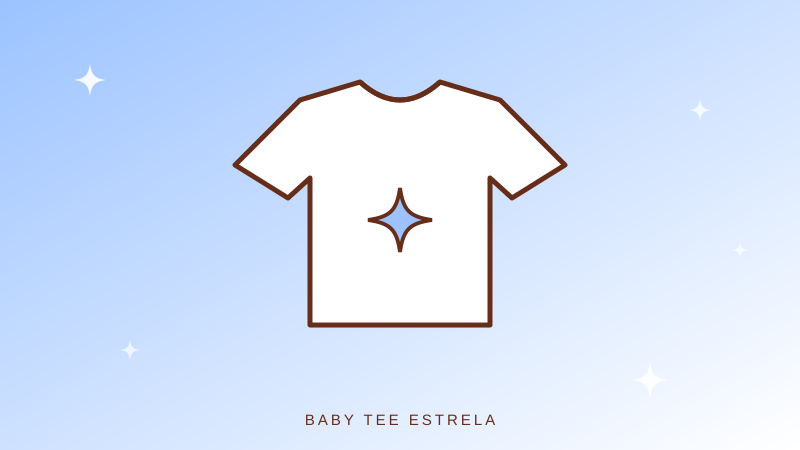
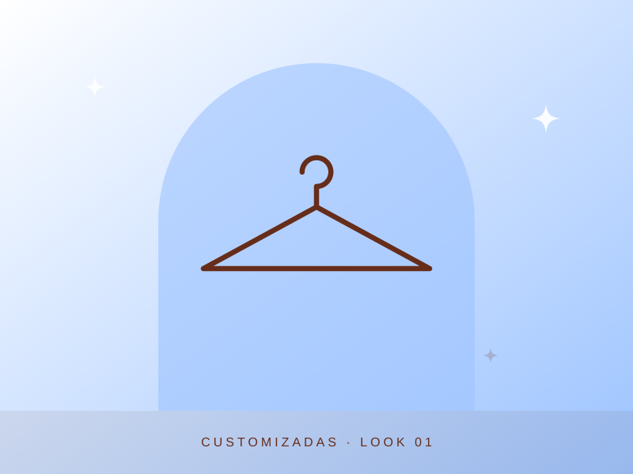
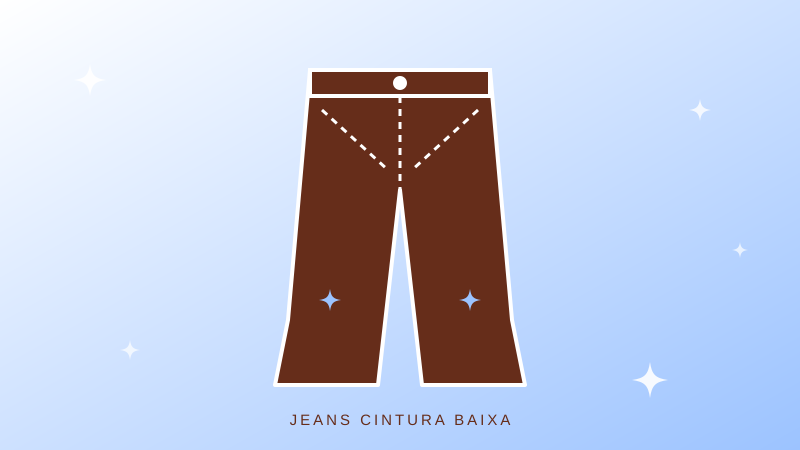
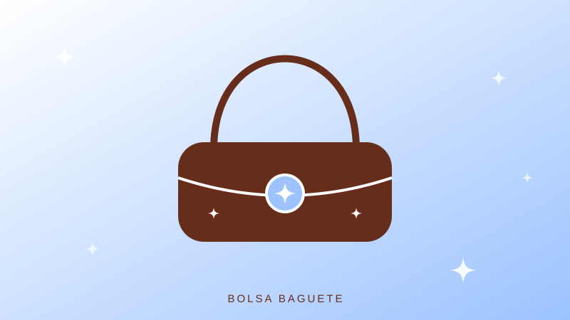
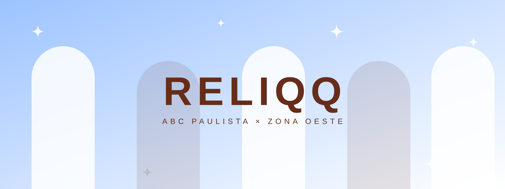

Feita de
encontros.
Do ABC paulista à zona oeste de São Paulo, a RELIQQ nasceu do encontro de ideias na Fatec de Carapicuíba. Uma vontade em comum: dar novos significados à moda.
NOSSA HISTÓRIA ↗O passado veste
o futuro.



A RELIQQ resgata referências, reinventa peças e celebra a liberdade de vestir quem você é. Cada escolha tem uma história. Cada detalhe, uma nova possibilidade.
CONHEÇA A RELIQQ ↗Explorações de estilo entre memórias, novas formas e peças irrepetíveis.

Garimpos dos anos 2000. Peças escolhidas uma a uma, para continuar contando histórias.
EXPLORAR COLEÇÃO ↗
Patches, bordados, correntes e ideias. Nosso ateliê transforma o comum em extraordinário.
EXPLORAR COLEÇÃO ↗Passe para o lado e descubra peças com histórias próprias. Uma curadoria viva de formas, texturas e memórias.
02 / 06
03 / 06
04 / 06 05 / 0606 / 06
05 / 0606 / 06Uma nova vida para peças que ainda têm muito a dizer.

Do ABC paulista à zona oeste de São Paulo, a RELIQQ nasceu do encontro de ideias na Fatec de Carapicuíba. Uma vontade em comum: dar novos significados à moda.
NOSSA HISTÓRIA ↗